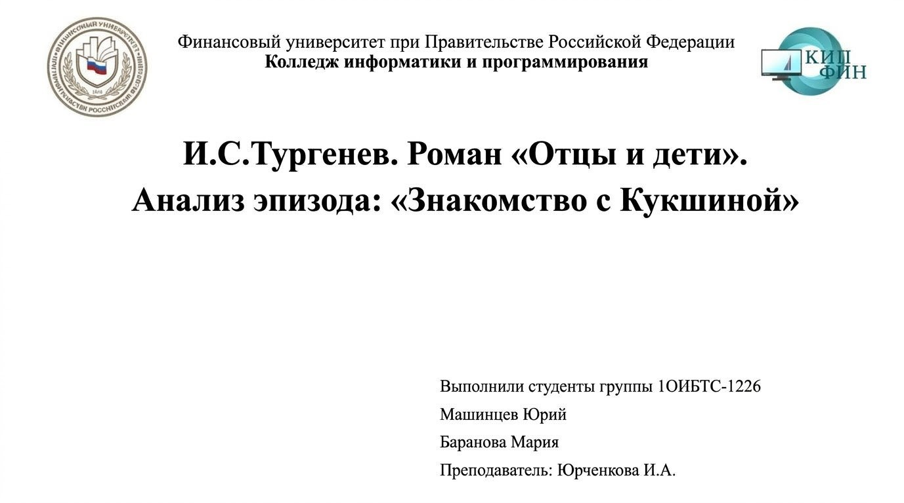
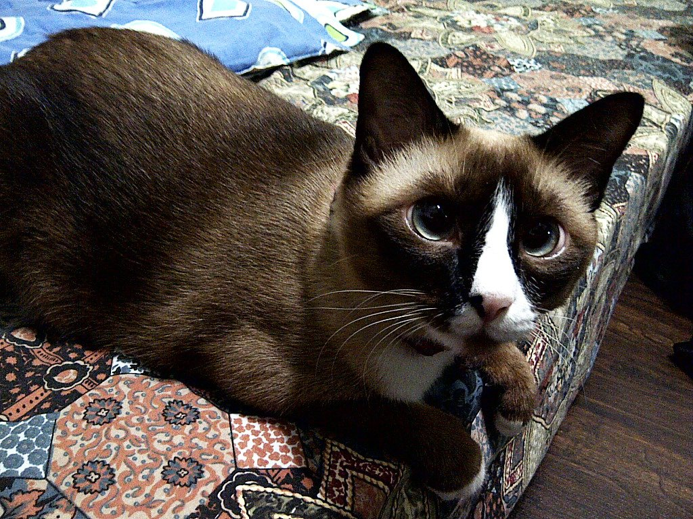
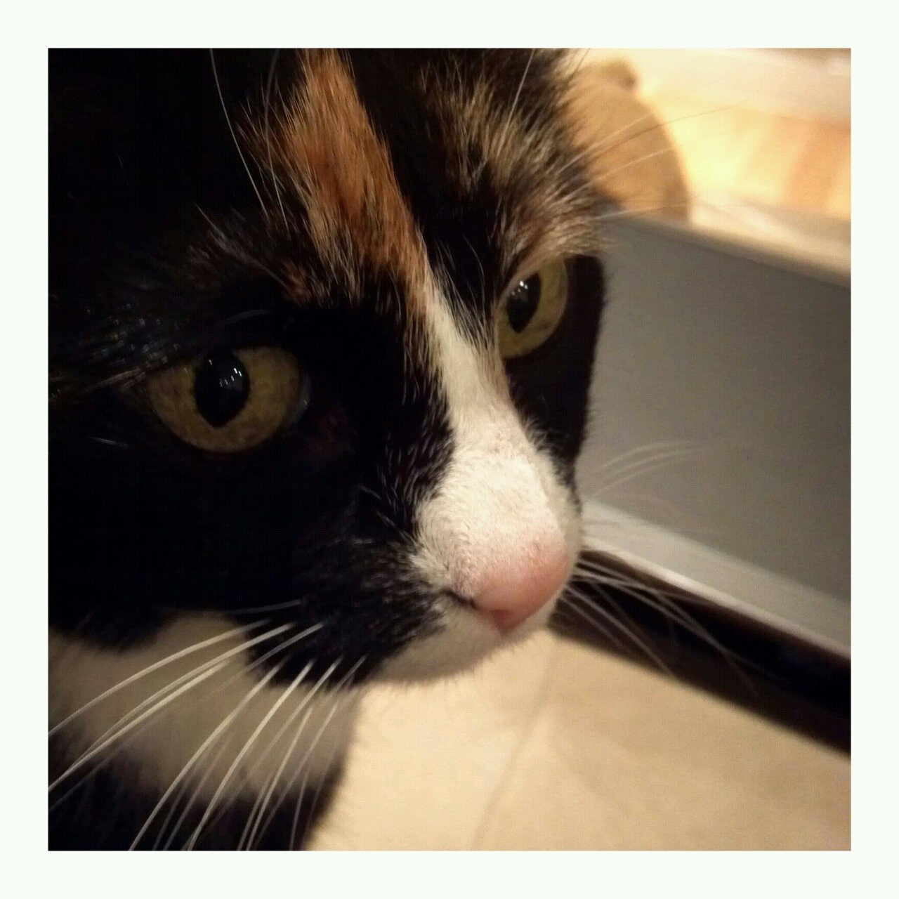
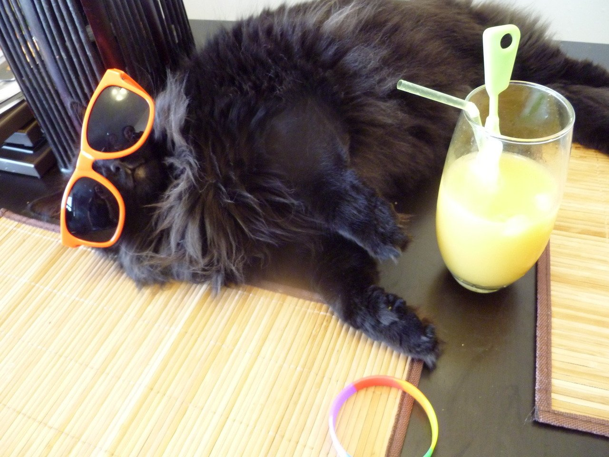
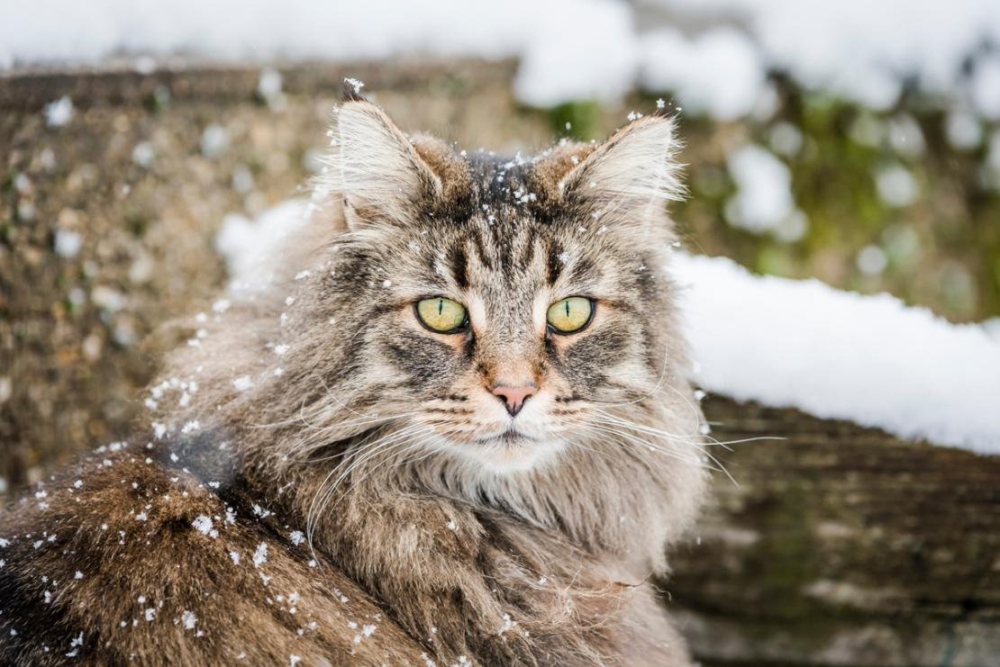
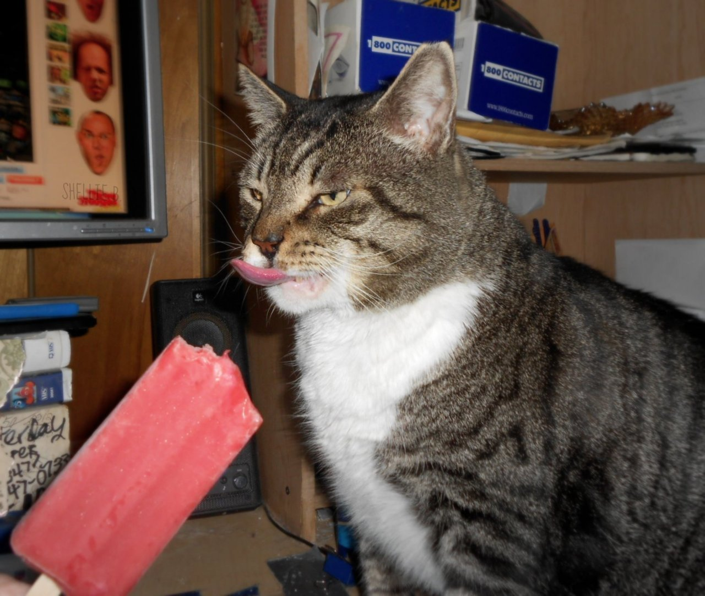
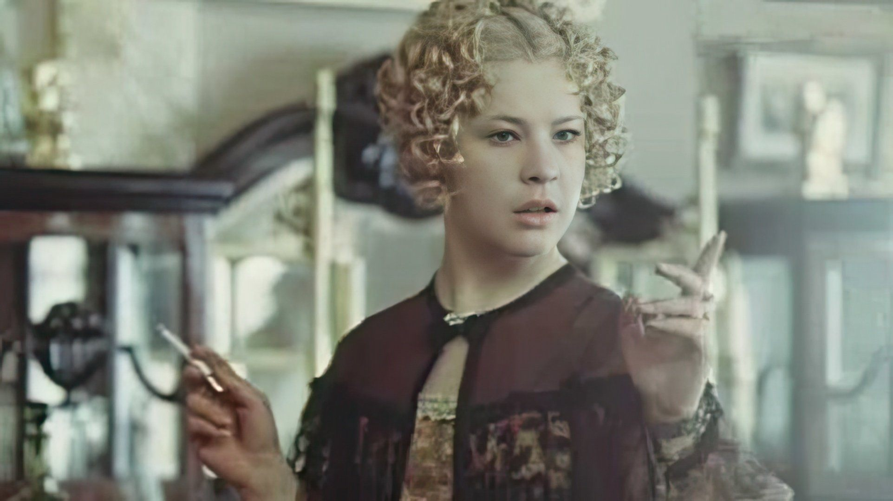

Небольшой трактат · 7 слайдов
Котики.
Необъективный обзор
самого важного явления в мире
Фото: TheCatAPI

02 · Наука
Кто вы, мистер Кот?
Кошка живёт рядом с человеком дольше, чем существует письменность. За это время она неплохо устроилась.
- Одомашнены около 10 000 лет назад. Древнейшее захоронение человека с кошкой — Кипр, около 7500 г. до н. э.
- Костей — 230, мышц в каждом ухе — 32. Неудивительно, что уши живут своей жизнью.
- Мурчат на 25–150 Гц. Есть гипотеза, что низкие частоты помогают костям срастаться.
- Спят 12–16 часов в сутки: до двух третей жизни — лёжа.
- Около 250 млн нейронов в коре — вдвое меньше, чем у собаки. Кошка об этом не знает и продолжает считать себя главной.

03 · Анатомия
Анатомия обаяния
Всё, что кажется милым, на самом деле — инженерия.
Глаза
Тапетум — зеркальный слой. Им нужно в шесть раз меньше света, чем человеку. В полной темноте — нет.
Усы
Вибриссы шириной с тело: встроенный дальномер. Стричь нельзя — это не украшение.
Уши
32 мышцы, поворот на 180° — и всё это независимо для каждого уха. Живой радар.
Хвост
Балансир и индикатор настроения. Дёргается — лучше не гладить.

04 · Культура
От Бастет до мемов
Путь от божества до интернет-звезды занял девять с половиной тысяч лет.
- около 7500 г. до н. э.Кипр: кошку хоронят вместе с человеком.
- около 2000 г. до н. э.Египет: кошек изображают рядом с людьми; позже они становятся спутницами Бастет. По свидетельству античных авторов, за убийство кошки карали смертью.
- Средние векаЕвропа: из символа уюта — в символ ведьмы.
- 1871Лондон, Хрустальный дворец: первая выставка кошек.
- 2005–2015Интернет: YouTube, «I Can Has Cheezburger», Grumpy Cat. Кот стал контентом.

05 · Породы
Краткий гид по породам
Все кошки прекрасны. Некоторые — ещё и очень большие.

06 · Факты
Семь фактов, звучащих как выдумка
- Не чувствуют сладкого: рецептор Tas1r2 сломан.
- У кошки есть третье веко — мигательная перепонка.
- Медленное моргание значит «я тебе доверяю». Проверено в 2020-м.
- Отпечаток носа уникален, как отпечаток пальца.
- Мурчат не только от удовольствия, но и чтобы успокоиться.
- Потеют только подушечками лап, а в жару часто дышат.
- Взрослые кошки не всасывают воду, а лакают.

07 · Итог
Кот — это не питомец.
Это стиль жизни.
- Появляется, когда сам решит. Поэтому каждый визит — событие.
- Лучший будильник — тёплый и мурчащий.
- Если сомневаешься — погладь кота. Если не сомневаешься — тоже.
Источники: Wikipedia («Cat», «Cat communication»), Humphrey et al., 2020. Фото: TheCatAPI.